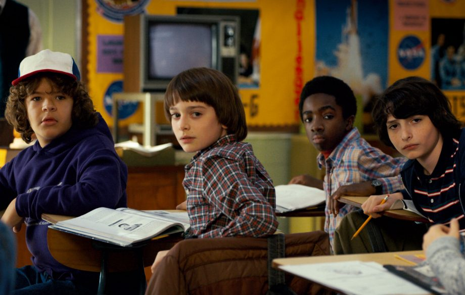
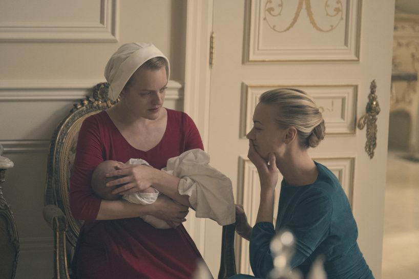

-
The Wire (2002)
A complex crime drama set in Baltimore that follows the thread of a single police investigation, from the perspectives of both law-enforcement officials and the criminals they're pursuing focused on the city's illegal drug trade in the first series before expanding in scope for the second to include corruption on the waterfront.
-
The Sopranos (1999)
A series chronicles the life of a New Jersey mobster, Tony Soprano, on his home front. There are other mobster Italian families, like his own, in his neighbourhood. They live like a community and have their own set of rules. The plot traces the difficulties in his personal life while his runs his criminal syndicate. He's respected for his power and kindness. This anti-hero's life is full of tragedies and dark humor.
-
True Detective (2014)

Louisiana investigators take another look at a 1995 murder when a similar case occurs in 2012 in this drama.
-
Breaking Bad (2008)

A high-school chemistry teacher learns he's dying, so he takes up a new career as a meth producer in hopes of earning enough money to take care of his family.
-
Black Mirror (2011)
Black Mirror is an anthology series that taps into our collective unease with the modern world, with each stand-alone episode a sharp, suspenseful tale exploring themes of contemporary techno-paranoia. Without questioning it, technology has transformed all aspects of our lives; in every home; on every desk; in every palm - a plasma screen; a monitor; a Smartphone -- a Black Mirror reflecting our 21st Century existence back at us. The series is created and written by Charlie Brooker, and executive produced by Brooker and Annabel Jones.
-
Atlanta (2016)

Two cousins try to work their way up through the Atlanta rap scene.
-
Stranger Things (2016)
A love letter to the '80s classics that captivated a generation, Stranger Things is set in 1983 Indiana, where a young boy vanishes into thin air. As friends, family and local police search for answers, they are drawn into an extraordinary mystery involving top-secret government experiments, terrifying supernatural forces and one very strange little girl.
-
Fargo (2014)
An anthology series inspired by the 1996 Coen brothers film. The first season follows a drifter who brings trouble to small-town Minnesota in 2006, while Season 2 focuses on a young state police officer and Vietnam veteran in 1979 South Dakota and Minnesota.
-
Dexter (2006)

A forensic expert lives a double life as a vigilante-serial killer who murders wrongdoers who've escaped justice.
-
The Handmaid's Tale (2017)
Adapted from the classic novel by Margaret Atwood, The Handmaid's Tale is the story of life in the dystopia of Gilead, a totalitarian society in what was formerly the United States. Facing environmental disasters and a plunging birthrate, Gilead is ruled by a twisted fundamentalism in its militarized "return to traditional values." As one of the few remaining fertile women, Offred (Elisabeth Moss) is a Handmaid in the Commander's household, one of the caste of women forced into sexual servitude as a last desperate attempt to repopulate the world. In this terrifying society, Offred must navigate between Commanders, their cruel Wives, domestic Marthas, and her fellow Handmaids--where anyone could be a spy for Gilead--all with one goal: to survive and find the daughter that was taken from her.
-
Lost (2004)
Forty-eight passengers miraculously survive an air crash only to be stranded on a scary island. With the trauma of the nightmarish crash still in their minds, the passengers have to put up with differences, hostility, predators and more. What does the future have in store for them?
-
Orange Is the New Black 2013
A New York woman struggles to adjust to life in a federal prison.